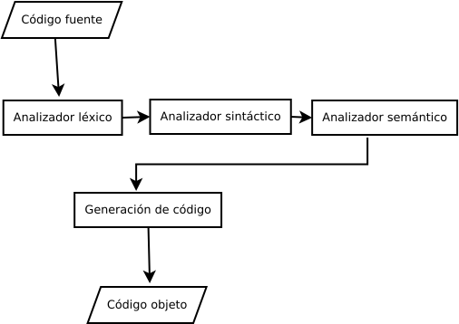

Clases léxicas
Etapas del compilador. El siguiente diagrama a bloques muestra las etapas de traducción de un compilador.

TOKEN. Un token léxico es una secuencia de caracteres que puede tratarse como una unidad en el gramática de un lenguaje de programación. Un lenguaje de programación clasifica tokens léxicos en un conjunto finito de tipos de tokens. Por ejemplo, algunos de los tipos de tokens de un lenguaje de programación típico son: ID, NUM, REAL, IF, COMMA, NOTEQ, LPAREN, RPAREN.
Dado una parte de programa. Se identifican los tokens.
/* encuentra un cero */
float acopla0(char *s) {
if (!strncmp(s, "0.0", 3))
return 0.;
}
Los tokens que se identifican, son los siguientes:
FLOAT ID(acopla0) LPAREN CHAR STAR ID(s) RPAREN LBRACE IF LPAREN BANG ID(strncmp) LPAREN ID(s) COMMA STRING(0.0) COMMA NUM(3) RPAREN RPAREN RETURN REAL(0.0) SEMI RBRACE EOF
donde se informa el tipo de token de cada token reportado; algunos de los tokens, como identificadores y literales, tienen valores semánticos adjuntos, dando información adicional de auxilio además del tipo de token. ¿Cómo se deben describir las reglas léxicas de un lenguaje de programación? ¿En qué idioma se debe escribir un analizador léxico? Podemos describir los tokens léxicos de un idioma en inglés.
Modern compiler implementation in C, Andrew W. Appel, Pág. 17-18
Clases léxicas. Podemos decir que los tokens, son: identificadores, palabras clave o palabras reservadas, delimitadores, números, operadores.
Función del analizador léxico. En pdf.
Expresiones Regulares
Digamos que un idioma es un conjunto de cadenas; una cadena es una secuencia finita de símbolos. Los símbolos mismos se toman de un alfabeto finito. El lenguaje Pascal es el conjunto de todas las cadenas que constituyen Pascal. Un programa; el lenguaje de los números primos es el conjunto de todas las cadenas de dígitos decimales que representar números primos; y el lenguaje de las palabras reservadas en C es el conjunto de todas las cadenas alfabéticas que no se pueden utilizar como identificadores en la programación C. Los dos primeros de estos lenguajes son conjuntos infinitos; el último es un finito conjunto. En todos estos casos, el alfabeto es el conjunto de caracteres ASCII. Cuando hablamos de idiomas de esta manera, no le asignaremos ningún significado a las cadenas; solo intentaremos clasificar cada cadena como en el idioma o no. Para especificar algunos de estos lenguajes (posiblemente infinitos) con descripciones finitas, usaremos la notación de expresiones regulares. Cada expresión regular representa un conjunto de cadenas.
Expresiones regulares. Son: el símbolo, alternativa, concatenación, epsilón, repetición (cerradura).
Modern compiler implementation in C, Andrew W. Appel, Pág. 19
La manera de representar a los tokens se hace por medio de expresiones regulares o por medio de autómatas. la representación por medio de expresiones regulares es de la manera siguiente:
La representación de la alternativa se hace de la siguiente manera:
a | b = {a} o {b}
La representación de la concatenación se hace de la siguiente manera:
a b = {ab}
La representación de la cerradura se hace de la siguiente manera, la cerradura de Kleene:
a* = {ε,a,aa,aaa, ...}
La representación de la cerradura se hace de la siguiente manera, la cerradura de positiva:
b+ = {b,bb,bbb, ...}
El caracter vacio se representa por las letras griegas epsilon o lambda.